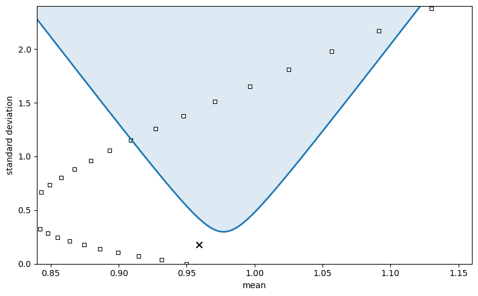
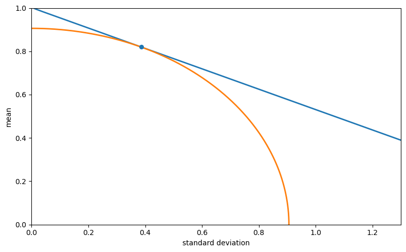
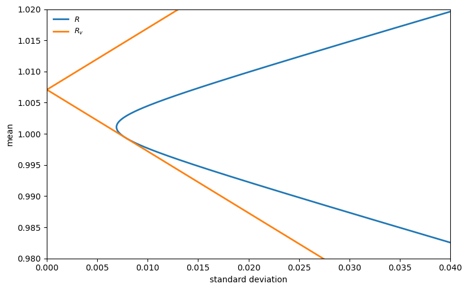
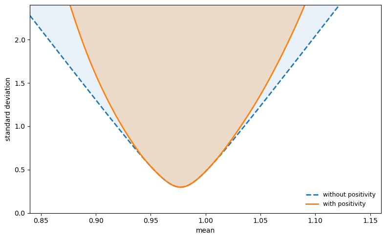
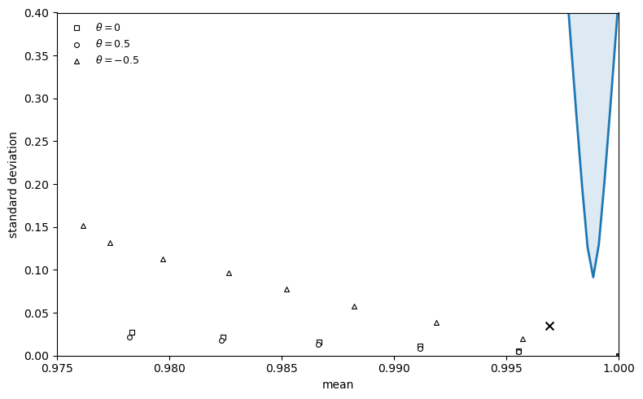
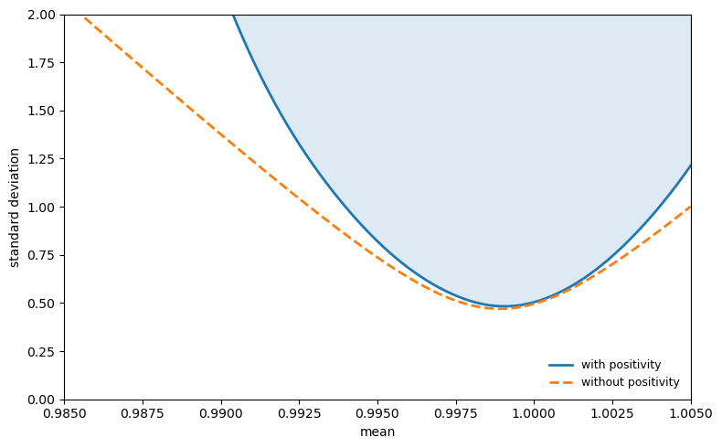

42. The Hansen-Jagannathan Bound#
42.1. Overview#
This lecture is based on Hansen and Jagannathan [1991].
In a rich class of models of dynamic economies, the equilibrium price of a future payoff on any traded security can be represented as the expectation of the product of the payoff and an intertemporal marginal rate of substitution (IMRS).
Hansen and Jagannathan ask: what can asset market data alone tell us about \(m\), without committing to any particular model?
Their answer is a set of volatility bounds – lower bounds on how volatile \(m\) must be.
These bounds require no parametric assumptions and apply to a wide range of models.
They are constructed by:
projecting \(m\) onto the space of traded payoffs to find the least-volatile \(m\) consistent with observed prices,
exploiting a duality between this SDF frontier and the familiar mean-variance frontier for asset returns, and
tightening the bound further by requiring \(m \geq 0\) (ruling out arbitrage), which introduces option-like truncations of portfolio payoffs.
The resulting admissible region in \([E(m),\, \sigma(m)]\) space is a diagnostic: any candidate model must place \(m\) inside this region.
Applied to U.S. stock and bond data, the bounds provide an alternative characterization of the equity premium puzzle ([Mehra and Prescott, 1985]): a representative consumer with standard CRRA preferences needs implausibly high risk aversion to generate enough IMRS volatility to match the data.
In this lecture we derive these bounds, implement them in Python, and replicate the key results of the paper.
We start with some standard imports.
from pathlib import Path
import numpy as np
import matplotlib.pyplot as plt
import pandas as pd
from scipy.optimize import minimize
42.2. The asset pricing framework#
42.2.1. General model#
Consider an economy in which multiple consumers (possibly with heterogeneous preferences and information sets) trade a vector \(x\) of \(n\) asset payoffs at date \(T\).
Let \(q\) denote the \(n \times 1\) vector of prices at date 0.
For any consumer \(j\) with IMRS \(m^j\),
Applying the law of iterated expectations, this implies the pricing relation for any consumer’s IMRS \(m\) and the common information set \(I = \cap_j I^j\):
Taking unconditional expectations of both sides gives:
Restriction 1 (Pricing restriction):
Restriction 2 (Positivity):
Restriction 1 must hold in any model consistent with consumer optimality.
Restriction 2 rules out arbitrage opportunities: The Role of Conditioning Information in Asset Pricing show that no-arbitrage implies \(m > 0\) with probability one, so in particular \(m \geq 0\).
Together, they imply that \([E(m), \sigma(m)]\) must lie in a certain admissible region in the mean-standard deviation plane.
42.2.2. The CRRA benchmark#
A natural benchmark is the IMRS of a representative consumer with CRRA preferences.
If the period utility function is \(U(c) = c^{1+\gamma}/(1+\gamma)\) for \(\gamma < 0\), then
where \(\beta\) is a subjective discount factor and \(-\gamma > 0\) is the coefficient of relative risk aversion.
Later we evaluate this model by computing \([E(m), \sigma(m)]\) from consumption data for various values of \(\gamma\) and checking whether the implied pairs lie inside the admissible region.
def crra_points_from_consumption(consumption, β=0.95, γ_grid=None):
"""Mean and std of IMRS m = β(c_{t+1}/c_t)^γ for each γ < 0."""
if γ_grid is None:
γ_grid = -np.arange(31)
growth = np.asarray(consumption[1:] / consumption[:-1], dtype=float)
means = []
sigmas = []
for γ in γ_grid:
m = β * growth ** γ
means.append(m.mean())
sigmas.append(m.std())
return np.asarray(means), np.asarray(sigmas)
42.2.3. Sample moments and population moments#
Under ergodicity, the time-series averages
converge to their population counterparts.
In what follows we use population moments (or simulated sample moments) interchangeably.
We use data built from three sources:
Annual (1891–1985): stock, bond, and consumption series from Robert Shiller’s chapter-26 workbook.
Monthly: real stock returns from Shiller’s Irrational Exuberance workbook; real Treasury bill returns and per-capita consumption from FRED (TB3MS, CPIAUCSL, DNDGRG3M086SBEA, DSERRG3M086SBEA, POPTHM).
Quarterly: holding-period returns on 3-, 6-, 9-, and 12-month bills constructed from FRED yields (TB3MS, TB6MS, GS1) deflated by CPIAUCSL.
def load_annual_paper_data():
data = DATA_BUNDLE["annual"].copy()
return (
data["year"].to_numpy(),
data["stock"].to_numpy(),
data["bond"].to_numpy(),
data["consumption"].to_numpy(),
)
42.3. The linear volatility bound (without positivity)#
42.3.1. Constructing \(m^*\)#
Suppose we only impose Restriction 1.
Among all random variables \(m\) satisfying \(Eq = E(xm)\), what is the minimum variance?
Hansen and Jagannathan show that the answer is the minimum second-moment projection of \(m\) onto the space \(P = \{c^\top x : c \in \mathbb{R}^n\}\).
This projection, call it \(m^*\), satisfies
For any valid \(m\), the residual \(m - m^*\) is orthogonal to every element of \(P\).
To see this, note that for any \(c \in \mathbb{R}^n\):
The last equality uses the fact that both \(m\) and \(m^*\) satisfy the pricing restriction \(E(xm) = Eq\).
Since \(m^*\) is in \(P\) and \(m - m^*\) is orthogonal to \(P\), we have \(E[m^*(m - m^*)] = 0\).
Writing \(m = m^* + (m - m^*)\) and expanding the second moment:
When \(Em = Em^*\), we can subtract \((Em)^2 = (Em^*)^2\) from both sides to obtain the variance decomposition:
The inequality holds because \(\sigma^2(m - m^*) \geq 0\).
42.3.2. When there is a riskless asset#
If \(x\) includes a riskless bond – a security that costs \(q = 1\) today and pays \(x = r_f\) with certainty – then Restriction 1 applied to this payoff gives \(1 = E(r_f \cdot m) = r_f \cdot Em\), so \(Em = 1/r_f\).
Since every valid \(m\) must have the same mean, the variance decomposition yields a single bound:
42.3.3. When there is no riskless asset#
The variance decomposition requires \(Em = Em^*\) (otherwise the cross-terms do not cancel).
When \(x\) does not include a unit payoff, the pricing restriction \(Eq = E(xm)\) provides \(n\) equations in the \(n\) coefficients \(\alpha\) but places no constraint on \(Em\).
To see why: \(m^* = x^\top \alpha^*\) has mean \(Em^* = (Ex)^\top \alpha^*\), determined by \(\alpha^* = (Exx^\top)^{-1} Eq\).
A different valid \(m\) (not in \(P\)) can satisfy the same \(n\) pricing equations with a different mean.
Since we cannot rule out valid \(m\)’s with other means, we must compute the bound separately for each candidate mean.
The bound therefore traces out a curve.
For each hypothetical mean \(v = Em\), we augment \(x\) with a unit payoff assigned expected price \(v\) and construct
where \(x_a = (x^\top, 1)^\top\) and \(q_a = (q^\top, v)^\top\).
The bound is
where \(\Sigma = \mathrm{Cov}(x)\) is the covariance matrix of payoffs.
This formula requires only the means of prices and payoffs and the covariance matrix of payoffs.
def hj_bound_no_positivity(μ_x, μ_q, Σ, v_grid=None):
"""HJ volatility bound without positivity: σ(m^v) = sqrt[(Eq - v*Ex)' Σ^{-1} (Eq - v*Ex)]."""
if v_grid is None:
v_grid = np.linspace(0.85, 1.15, 300)
Σ_inv = np.linalg.pinv(Σ)
σ_bound = np.array([
np.sqrt(np.maximum((μ_q - v * μ_x) @ Σ_inv @ (μ_q - v * μ_x), 0.0))
for v in v_grid
])
return v_grid, σ_bound
42.3.4. Duality with the mean-variance frontier for returns#
Now we derive the relation between the mean-standard deviation frontier for \(m\) and the mean-variance frontier for asset returns.
Let \(\pi(p) = E(mp)\) denote the expected-price functional that maps each payoff \(p\) in \(P\) to its price (see The Role of Conditioning Information in Asset Pricing for the full development of \(\pi\) as the Riesz representation of the pricing functional).
Define the set of returns as
\(R\) contains all payoffs in \(P\) with expected prices equal to one.
Suppose \(P\) contains a unit payoff and \(\pi(1) \neq 0\).
Then \(1/\pi(1)\) is in \(R\).
A second payoff in \(R\) is \(r^* \equiv m^*/\pi(m^*)\), where \(\pi(m^*) = E(m^{*2})\), so
The Role of Conditioning Information in Asset Pricing established that \(r^*\) is the payoff in \(R\) with the smallest norm (second moment).
Since \(m^* = \pi(m^*) \cdot r^*\), the frontier IMRS \(m^*\) is proportional to \(r^*\).
Consequently, \(r^*\) solves
when \(\mu\) is set equal to \(Er^*\).
The proportionality \(m^* = \pi(m^*) \cdot r^*\) implies
Since \(E(r^2) = \sigma(r)^2 + (Er)^2\), the mean-standard deviation frontier for \(R\) is a cone with apex at \([0,\; 1/\pi(1)]\) in \((\sigma, \mu)\) space.
The point \(r^*\) lies on the lower (efficient) portion of this frontier.
The lower portion is a ray from \([0, 1/\pi(1)]\) through \([\sigma(r^*), Er^*]\).
The slope of this ray is the Sharpe ratio of \(r^*\): \(\{Er^* - [1/\pi(1)]\}/\sigma(r^*)\).
The circle of radius \(\|r^*\|\) centered at the origin passes through \([\sigma(r^*), Er^*]\) with slope \(-\sigma(r^*)/Er^*\).
Equating the two slopes gives (equation (16) of the paper)
Combining with the variance decomposition \(\sigma(m) \geq \sigma(m^*)\):
This is the Hansen-Jagannathan bound (HJ bound): \(\sigma(m)/Em\) is bounded below by the absolute value of the slope of the mean-standard deviation frontier for \(R\).
Note
Footnote 4 of the paper notes an alternative: apply Cauchy-Schwarz to any zero-price payoff \(z\) to get \(\sigma(m)/Em \geq |Ez|/\sigma(z)\), then maximise over \(z\).
Doubts or Variability? uses this route.
This lecture follows the paper’s projection construction (Section III) and duality argument (Section III.C).
The following two functions implement the mean-variance frontier and the maximum Sharpe ratio.
def mean_variance_frontier(μ_x, Σ, n_points=300):
"""Mean-standard-deviation frontier via the two-fund formula."""
n = len(μ_x)
Σ_inv = np.linalg.pinv(Σ)
ones = np.ones(n)
A = μ_x @ Σ_inv @ μ_x
B = μ_x @ Σ_inv @ ones
C = ones @ Σ_inv @ ones
D = A * C - B**2
c_min = B / C
c_grid = np.linspace(c_min - 0.10, c_min + 0.15, n_points)
var_c = (C * c_grid**2 - 2 * B * c_grid + A) / D
std_c = np.sqrt(np.maximum(var_c, 0))
return c_grid, std_c
def max_sharpe_ratio(μ_x, μ_q, Σ, rf=None):
"""Maximum Sharpe ratio from the asset menu."""
n = len(μ_x)
Σ_inv = np.linalg.pinv(Σ)
if rf is not None:
μ_exc = μ_x - rf
w_tan = Σ_inv @ μ_exc
sr_max = (μ_exc @ w_tan) / np.sqrt(w_tan @ Σ @ w_tan)
else:
ones = np.ones(n)
A = μ_x @ Σ_inv @ μ_x
B = μ_x @ Σ_inv @ ones
C = ones @ Σ_inv @ ones
D = A * C - B**2
sr_max = np.sqrt(D / C)
return float(sr_max)
42.4. Computing the annual frontier#
We now compute the HJ bound from annual US stock and bond returns (1891–1985).
annual_years, annual_stock, annual_bond, annual_consumption = load_annual_paper_data()
annual_payoffs = np.column_stack([annual_stock, annual_bond])
annual_prices = np.ones_like(annual_payoffs)
μ_x_annual, μ_q_annual, Σ_annual = compute_moments(annual_payoffs, annual_prices)
v_annual, σ_annual = hj_bound_no_positivity(
μ_x_annual, μ_q_annual, Σ_annual, v_grid=np.linspace(0.84, 1.16, 400)
)
annual_γ_grid = -np.arange(31)
annual_crra_mean, annual_crra_std = crra_points_from_consumption(
annual_consumption, β=0.95, γ_grid=annual_γ_grid
)
The HJ bound traces out the boundary of the admissible region \(S\) in \([E(m),\, \sigma(m)]\) space.
Any parametric model must place its implied \([E(m), \sigma(m)]\) pair inside \(S\).
fig, ax = plt.subplots(figsize=(8, 5))
ax.fill_between(v_annual, σ_annual, 2.4, alpha=0.15)
ax.plot(v_annual, σ_annual, lw=2)
ax.scatter(
annual_crra_mean,
annual_crra_std,
marker="s",
s=20,
facecolors="white",
edgecolors="black",
linewidths=0.8,
)
annual_log_point = np.array([np.mean(1.0 / annual_stock), np.std(1.0 / annual_stock)])
ax.scatter(
annual_log_point[0],
annual_log_point[1],
marker="x",
s=50,
color="black",
)
ax.set_xlim(0.84, 1.16)
ax.set_ylim(0.0, 2.4)
ax.set_xlabel("mean")
ax.set_ylabel("standard deviation")
plt.tight_layout()
plt.show()

Fig. 42.1 Annual IMRS frontier#
The shaded region is the admissible set \(S\): any valid IMRS must have a \([E(m), \sigma(m)]\) pair inside it.
The squares show the IMRS implied by CRRA preferences \(m = \beta (c_{t+1}/c_t)^{\gamma}\) for \(\gamma = 0, -1, \ldots, -30\) with \(\beta = 0.95\).
Only at high values of \(|\gamma|\) do the squares enter the admissible region.
The cross marks the reciprocal of the stock return, \(1/r_{\text{stock}}\), as a simple benchmark.
42.5. The duality theorem#
The preceding figure illustrates the duality between the two frontiers – the SDF frontier and the asset return mean-variance frontier – that Hansen and Jagannathan establish formally.
Theorem 42.1 (Duality (Section III.C))
For any \(v\), let \(R_v\) denote the set of returns augmented by a hypothetical riskless bond priced at \(v\), and let \(r_v^*\) denote the minimum second-moment return in \(R_v\).
Then \(m_v\) is proportional to \(r_v^*\), and
i.e. the bound on \(\sigma(m)/Em\) at mean \(v\) equals the absolute value of the slope of the mean-standard deviation frontier for \(R_v\).
To illustrate this duality, we compute the mean-variance frontier for asset returns using quarterly Treasury bill data (3-, 6-, 9-, and 12-month holding-period returns).
We also locate the minimum second-moment payoff \(r^*\) on the frontier, which is the return proportional to the minimum-variance IMRS \(m^*\).
def load_quarterly_bill():
return DATA_BUNDLE["quarterly"].copy()
# Mean-variance frontier from quarterly bill returns
quarterly_bill_data = load_quarterly_bill().to_numpy()
μ_bill = quarterly_bill_data.mean(axis=0)
Σ_bill = np.cov(quarterly_bill_data.T, bias=True)
Σ_inv_bill = np.linalg.pinv(Σ_bill)
ones_bill = np.ones(len(μ_bill))
A_bill = μ_bill @ Σ_inv_bill @ μ_bill
B_bill = μ_bill @ Σ_inv_bill @ ones_bill
C_bill = ones_bill @ Σ_inv_bill @ ones_bill
D_bill = A_bill * C_bill - B_bill**2
# Frontier: σ^2 = (C*μ^2 - 2B*μ + A) / D => μ = (B +/- sqrt(D*(C*σ^2 - 1))) / C
σ_min_bill = 1.0 / np.sqrt(C_bill)
σ_grid_bill = np.linspace(σ_min_bill * 1.001, 1.3, 1000)
disc_bill = D_bill * (C_bill * σ_grid_bill**2 - 1)
disc_bill = np.maximum(disc_bill, 0)
μ_upper_bill = (B_bill + np.sqrt(disc_bill)) / C_bill
μ_lower_bill = (B_bill - np.sqrt(disc_bill)) / C_bill
# Minimum second-moment payoff r*
μ_star_bill = B_bill / (C_bill + D_bill)
σ_star_bill = np.sqrt(
max(
(C_bill * μ_star_bill**2 - 2 * B_bill * μ_star_bill + A_bill) / D_bill, 0)
)
r_star_norm = np.sqrt(σ_star_bill**2 + μ_star_bill**2)
The next figure plots the mean-standard deviation frontier for returns in \(R\) together with a quarter-circle of radius \(\|r^*\|\).
The tangency point locates the minimum second-moment payoff \(r^*\).
θ_circle = np.linspace(0, np.pi / 2, 400)
σ_circle = r_star_norm * np.cos(θ_circle)
μ_circle = r_star_norm * np.sin(θ_circle)
σ_combined = np.concatenate([σ_grid_bill[::-1], σ_grid_bill])
μ_combined = np.concatenate([μ_lower_bill[::-1], μ_upper_bill])
fig, ax = plt.subplots(figsize=(8, 5))
ax.plot(σ_combined, μ_combined, lw=2)
ax.plot(σ_circle, μ_circle, lw=2)
ax.scatter([σ_star_bill], [μ_star_bill], s=30, zorder=5)
ax.set_xlim(0.0, 1.3)
ax.set_ylim(0.0, 1.0)
ax.set_xlabel("standard deviation")
ax.set_ylabel("mean")
plt.tight_layout()
plt.show()

Fig. 42.2 Minimum second-moment payoff in \(R\)#
The next figure zooms in on the frontier and adds the augmented set \(R_v\), which includes a hypothetical riskless bond priced at \(v\).
The lines through \((0, 1/v)\) tangent to the \(R\) frontier trace the boundary of \(R_v\).
By Theorem 42.1, the slope of these tangent lines equals \(\sigma(m^v)/v\).
σ_zoom = np.linspace(σ_min_bill * 1.001, 0.04, 500)
disc_zoom = D_bill * (C_bill * σ_zoom**2 - 1)
disc_zoom = np.maximum(disc_zoom, 0)
μ_up_zoom = (B_bill + np.sqrt(disc_zoom)) / C_bill
μ_lo_zoom = (B_bill - np.sqrt(disc_zoom)) / C_bill
σ_comb_zoom = np.concatenate([σ_zoom[::-1], σ_zoom])
μ_comb_zoom = np.concatenate([μ_lo_zoom[::-1], μ_up_zoom])
# Augmented R_v: tangent from (0, 1/v) to the frontier
μ_vertex_bill = B_bill / C_bill
v_fig3 = 1.0 / (μ_vertex_bill + 0.006)
rf_fig3 = 1.0 / v_fig3
valid_σ = σ_zoom > 1e-10
slopes_up = np.abs(μ_up_zoom[valid_σ] - rf_fig3) / σ_zoom[valid_σ]
slopes_lo = np.abs(μ_lo_zoom[valid_σ] - rf_fig3) / σ_zoom[valid_σ]
max_slope = max(np.max(slopes_up), np.max(slopes_lo))
σ_line = np.linspace(0, 0.04, 200)
fig, ax = plt.subplots(figsize=(8, 5))
ax.plot(σ_comb_zoom, μ_comb_zoom, lw=2, label=r"$R$")
rv_line = ax.plot(σ_line, rf_fig3 + max_slope * σ_line, lw=2, label=r"$R_v$")
ax.plot(σ_line, rf_fig3 - max_slope * σ_line, lw=2, color=rv_line[0].get_color())
ax.set_xlim(0.0, 0.04)
ax.set_ylim(0.98, 1.02)
ax.set_xlabel("standard deviation")
ax.set_ylabel("mean")
ax.legend(frameon=False, fontsize=9)
plt.tight_layout()
plt.show()

Fig. 42.3 Mean-standard-deviation frontiers for \(R\) and \(R_v\)#
42.6. Tightening the bound: imposing positivity of \(m\)#
42.6.1. Option-based construction#
When we also impose Restriction 2 (\(m \geq 0\)), the bound can be tightened because many of the frontier \(m^v\)’s that solve the linear problem may be negative with positive probability.
Hansen and Jagannathan show that the minimum variance nonnegative \(m\) satisfying Restriction 1 is of the form
which is the payoff on a European call (or put) option on a portfolio of the assets.
Note that \(\tilde{\alpha}^v\) is not the same coefficient vector as \(\alpha^v\) from the unconstrained problem: the positivity constraint changes the optimal portfolio weights, and the positive part is then applied to the result.
The positive bound \(\sigma(\tilde{m}^v)\) satisfies:
\(\sigma(\tilde{m}^v) \geq \sigma(m^v)\) (it is tighter).
The admissible region \(S^+\) (with positivity) is a proper subset of \(S\).
\(S^+\) is convex.
Computing \(\sigma(\tilde{m}^v)\) requires knowing the distribution of \(x_a^\top \tilde{\alpha}^v\), not just its first two moments.
For the figures below, we use the exact sample analogue of the truncation problem and solve it numerically over a grid of candidate means.
def positive_frontier_from_sample(payoffs, prices, v_grid, maxiter=2_000):
"""Positivity-restricted HJ frontier via constrained optimisation."""
x = np.asarray(payoffs, dtype=float)
q = np.asarray(prices, dtype=float)
if x.ndim == 1:
x = x[:, None]
if q.ndim == 1:
q = q[:, None]
T = x.shape[0]
μ_q = q.mean(axis=0)
x_aug = np.column_stack([x, np.ones(T)])
second_moment = x_aug.T @ x_aug / T
pinv_second = np.linalg.pinv(second_moment)
means = []
sigmas = []
w_prev = None
for v in v_grid:
q_aug = np.r_[μ_q, v]
w0 = pinv_second @ q_aug
scale = q_aug @ w0
if abs(scale) < 1e-12:
means.append(np.nan)
sigmas.append(np.nan)
continue
w0 = w0 / scale
candidates = [w0]
if w_prev is not None:
s2 = q_aug @ w_prev
if abs(s2) > 1e-12:
candidates.append(w_prev / s2)
best_obj = np.inf
best_result = None
for w_init in candidates:
def objective(w):
r = x_aug @ w
return np.mean(np.maximum(r, 0.0) ** 2)
def jac(w):
r = x_aug @ w
rp = np.maximum(r, 0.0)
return 2.0 * (x_aug.T @ rp) / T
result = minimize(
objective,
w_init,
jac=jac,
method="SLSQP",
constraints=(
{
"type": "eq",
"fun": lambda w, qa=q_aug: qa @ w - 1.0,
"jac": lambda w, qa=q_aug: qa,
},
),
options={"maxiter": maxiter, "ftol": 1e-14},
)
if result.fun < best_obj:
best_obj = result.fun
best_result = result
r_plus = np.maximum(x_aug @ best_result.x, 0.0)
δ_v = np.mean(r_plus ** 2)
if δ_v < 1e-14:
means.append(np.nan)
sigmas.append(np.nan)
continue
m = r_plus / δ_v
means.append(m.mean())
sigmas.append(m.std())
w_prev = best_result.x.copy()
return np.asarray(means), np.asarray(sigmas)
annual_pos_mean, annual_pos_std = positive_frontier_from_sample(
annual_payoffs,
annual_prices,
v_annual,
)
fig, ax = plt.subplots(figsize=(8, 5))
ax.fill_between(v_annual, σ_annual, 2.4, alpha=0.1)
ax.plot(v_annual, σ_annual, "--", lw=2, label="without positivity")
valid_annual = np.isfinite(annual_pos_std)
order = np.argsort(annual_pos_mean[valid_annual])
ax.fill_between(
annual_pos_mean[valid_annual][order],
annual_pos_std[valid_annual][order],
2.4,
alpha=0.2,
)
ax.plot(
annual_pos_mean[valid_annual][order],
annual_pos_std[valid_annual][order],
lw=2,
label="with positivity",
)
ax.set_xlim(0.84, 1.16)
ax.set_ylim(0.0, 2.4)
ax.set_xlabel("mean")
ax.set_ylabel("standard deviation")
ax.legend(frameon=False, fontsize=9, loc="lower right")
plt.tight_layout()
plt.show()

Fig. 42.4 IMRS frontier with and without positivity#
The dashed curve is the linear bound (without positivity).
The solid curve is the tighter bound obtained by imposing \(m \geq 0\).
The admissible region \(S^+\) (with positivity) is a proper subset of \(S\).
Requiring positivity eliminates a portion of the admissible region near the extremes of \(E(m)\), where the linear frontier \(m^v\) would need to take negative values with high probability.
42.8. Time-nonseparable preferences#
Section V of the paper examines whether relaxing time separability can help close the gap to the HJ bound.
Consider the nonseparable service flow
where \(\theta > 0\) represents local durability and \(\theta < 0\) represents habit persistence (intertemporal complementarity).
The IMRS becomes more complex because it depends on current and future marginal utilities:
The paper shows (Figure 5) that habit persistence (\(\theta < 0\)) dramatically increases \(\sigma(m)\) for given \(\gamma\).
Local durability (\(\theta > 0\)) barely reduces it.
The paper’s Figure 5 uses a consumption process estimated by Gallant and Tauchen, which is not bundled with this lecture.
Instead, we use monthly U.S. stock and bill returns as the two base payoffs.
We then simulate the nonseparable IMRS for three values of \(\theta\) (0, 0.5, \(-0.5\)) across a range of \(\gamma < 0\) values, and plot the resulting \([E(m), \sigma(m)]\) pairs against the HJ frontier.
monthly_panel = DATA_BUNDLE["monthly"].copy()
# Two base payoffs: monthly real stock and bill returns
monthly_payoffs = monthly_panel[['stock', 'bill']].dropna().to_numpy()
monthly_prices = np.ones_like(monthly_payoffs)
v_monthly = np.linspace(0.975, 1.025, 200)
μ_x_monthly, μ_q_monthly, Σ_monthly = compute_moments(monthly_payoffs, monthly_prices)
v_m_nopositivity, σ_m_nopositivity = hj_bound_no_positivity(
μ_x_monthly, μ_q_monthly, Σ_monthly, v_grid=v_monthly
)
def simulate_nonseparable_imrs(
T=20_000,
γ=-5,
θ=0.0,
δ=1.0,
μ_c=0.0045,
σ_c=0.0055,
seed=1,
):
rng = np.random.default_rng(seed)
growth = np.exp(μ_c + σ_c * rng.standard_normal(T + 2))
c = np.ones(T + 2)
for t in range(T + 1):
c[t + 1] = c[t] * growth[t + 1]
s = c[1:] + θ * c[:-1]
s = np.maximum(s, 1e-30) # avoid 0**γ when γ < 0
s_γ = s ** γ
# Precompute κ via Monte Carlo.
g_mc = np.exp(μ_c + σ_c * rng.standard_normal(500_000))
κ = np.mean(np.maximum(g_mc + θ, 1e-30) ** γ)
c_γ = np.maximum(c, 1e-30) ** γ
num = s_γ[1:T+1] + θ * δ * c_γ[2:T+2] * κ
denom = s_γ[0:T] + θ * δ * c_γ[1:T+1] * κ
with np.errstate(divide='ignore', invalid='ignore'):
m = δ * num / denom
return m[np.isfinite(m) & (np.abs(m) < 1e6)]
fig, ax = plt.subplots(figsize=(8, 5))
ax.fill_between(v_m_nopositivity, σ_m_nopositivity, 0.4, alpha=0.15)
ax.plot(v_m_nopositivity, σ_m_nopositivity, lw=2)
for θ, marker, label in [
(0.0, "s", r"$\theta = 0$"),
(0.5, "o", r"$\theta = 0.5$"),
(-0.5, "^", r"$\theta = -0.5$"),
]:
pts = []
for γ in range(0, -15, -1):
m_sim = simulate_nonseparable_imrs(γ=γ, θ=θ, seed=abs(γ) + 5)
pts.append((m_sim.mean(), m_sim.std()))
pts = np.asarray(pts)
ax.scatter(
pts[:, 0],
pts[:, 1],
marker=marker,
s=18,
facecolors="white",
edgecolors="black",
linewidths=0.8,
label=label,
)
monthly_log_point = np.array([np.mean(1.0 / monthly_panel["stock"]), np.std(1.0 / monthly_panel["stock"])])
ax.scatter(monthly_log_point[0], monthly_log_point[1], marker="x", s=50, color="black")
ax.set_xlim(0.975, 1.0)
ax.set_ylim(0.0, 0.4)
ax.set_xlabel("mean")
ax.set_ylabel("standard deviation")
ax.legend(frameon=False, fontsize=9, loc="upper left")
plt.tight_layout()
plt.show()

Fig. 42.5 IMRS frontier using monthly data#
The squares (\(\theta = 0\), time-separable), circles (\(\theta = 0.5\), local durability), and triangles (\(\theta = -0.5\), habit persistence) trace out \([E(m), \sigma(m)]\) pairs as \(|\gamma|\) increases.
Habit persistence shifts the IMRS points upward, making it easier to enter the admissible region at moderate \(|\gamma|\).
Local durability has little effect.
Note
The paper’s Figure 5 uses 8 payoffs (2 base returns plus 6 instrument-scaled returns) and the Gallant-Tauchen consumption process.
Here we use just the 2 base payoffs (stock and bill returns) from FRED proxy data.
The qualitative pattern matches: habit persistence (\(\theta < 0\)) helps enter the admissible region at moderate \(|\gamma|\).
42.9. Treasury bill data and monetary models#
Figure 6 in the paper uses monthly prices on 3-, 6-, 9-, and 12-month discount bonds to construct real quarterly holding-period returns.
We build a proxy from FRED Treasury yields and the same real-consumption deflator used above.
We compute both the linear and positivity-restricted bounds from these quarterly bill returns.
quarterly_payoffs = load_quarterly_bill().to_numpy()
quarterly_prices = np.ones_like(quarterly_payoffs)
μ_x_quarterly, μ_q_quarterly, Σ_quarterly = compute_moments(
quarterly_payoffs, quarterly_prices
)
v_quarterly, σ_quarterly = hj_bound_no_positivity(
μ_x_quarterly,
μ_q_quarterly,
Σ_quarterly,
v_grid=np.linspace(0.985, 1.005, 200),
)
quarterly_pos_mean, quarterly_pos_std = positive_frontier_from_sample(
quarterly_payoffs,
quarterly_prices,
v_quarterly,
)
The figure below plots the resulting IMRS frontier, replicating Figure 6 of the paper.
Because our FRED proxy differs from the original CRSP bill data, the levels differ slightly, but the qualitative features match: the positivity-restricted region \(S^+\) (shaded) is a proper subset of \(S\) (dashed boundary), and the bounds near \(Em \approx 1\) are large.
fig, ax = plt.subplots(figsize=(8, 5))
# S+ (with positivity) -- shaded region
valid_quarterly = np.isfinite(quarterly_pos_std)
order = np.argsort(quarterly_pos_mean[valid_quarterly])
ax.fill_between(
quarterly_pos_mean[valid_quarterly][order],
quarterly_pos_std[valid_quarterly][order],
2.0,
alpha=0.15,
color='C0',
)
ax.plot(
quarterly_pos_mean[valid_quarterly][order],
quarterly_pos_std[valid_quarterly][order],
lw=2,
label="with positivity",
)
# S (without positivity) -- dashed boundary
ax.plot(v_quarterly, σ_quarterly, "--", lw=2, label="without positivity")
ax.set_xlim(0.985, 1.005)
ax.set_ylim(0.0, 2.0)
ax.set_xlabel("mean")
ax.set_ylabel("standard deviation")
ax.legend(frameon=False, fontsize=9, loc="lower right")
plt.tight_layout()
plt.show()

Fig. 42.6 IMRS frontier using quarterly returns#
42.10. Exercises#
The exercises below use a small simulated exchange economy to verify the projection and variance-decomposition logic algebraically.
We provide the code here for you to use in your solution.
def simulate_economy(
T=10_000,
γ=2.0,
δ=0.99,
μ_c=0.018,
σ_c=0.033,
μ_d=0.02,
σ_d=0.12,
ρ=0.3,
seed=42,
):
rng = np.random.default_rng(seed)
Ω = np.array(
[
[σ_c**2, ρ * σ_c * σ_d],
[ρ * σ_c * σ_d, σ_d**2],
]
)
shocks = rng.multivariate_normal([0.0, 0.0], Ω, T)
gc = np.exp(μ_c + shocks[:, 0])
gd = np.exp(μ_d + shocks[:, 1])
m_true = δ * gc ** (-γ)
rf = 1.0 / np.mean(m_true)
stock_raw = gd
stock = stock_raw / np.mean(m_true * stock_raw)
bond = np.full(T, rf)
returns = np.column_stack([stock, bond])
prices = np.ones((T, 2))
return returns, prices, m_true
def crra_imrs_moments(γ, δ=0.99, μ_c=0.018, σ_c=0.033):
E_m = δ * np.exp(-γ * μ_c + 0.5 * γ**2 * σ_c**2)
var_m = δ**2 * np.exp(-2.0 * γ * μ_c + 2.0 * γ**2 * σ_c**2) - E_m**2
σ_m = np.sqrt(max(var_m, 0.0))
return E_m, σ_m
Exercise 42.1
Using simulate_economy with \(\gamma = 5\):
(a) Construct \(m^* = x^\top \alpha^*\) with \(\alpha^* = (E x x^\top)^{-1} E q\) from the simulated payoff data.
(b) Verify that \(m^*\) satisfies the pricing restriction \(E(x m^*) \approx \mu_q\).
© Verify the variance decomposition \(\text{Var}(m) = \text{Var}(m^*) + \text{Var}(m - m^*)\) and check that \(m - m^*\) is orthogonal to \(m^*\).
Solution
# Simulate economy with γ = 5
returns_g5, prices_g5, m_true_g5 = simulate_economy(T=10000, γ=5.0, seed=7)
T5 = len(m_true_g5)
# Construct m* by projecting onto P = span(returns)
Mxx = (returns_g5.T @ returns_g5) / T5
alpha_star = np.linalg.solve(Mxx, np.ones(2))
m_star = returns_g5 @ alpha_star
residual = m_true_g5[:T5] - m_star
pd.DataFrame({
'E[r_i * m*]': [np.mean(returns_g5[:, i] * m_star) for i in range(2)],
}, index=['Stock', 'Bond']).T
| Stock | Bond | |
|---|---|---|
| E[r_i * m*] | 1.0 | 1.0 |
Both entries are close to 1, confirming that \(m^*\) satisfies the pricing restriction \(E(x m^*) = \mu_q\).
pd.DataFrame({
'Var(m)': [np.var(m_true_g5)],
'Var(m*)': [np.var(m_star)],
'Var(m - m*)': [np.var(residual)],
'Var(m*) + Var(m - m*)': [np.var(m_star) + np.var(residual)],
'E[(m - m*) m*]': [np.mean(residual * m_star)],
}).T.rename(columns={0: 'Value'})
| Value | |
|---|---|
| Var(m) | 2.278778e-02 |
| Var(m*) | 2.157581e-03 |
| Var(m - m*) | 2.063020e-02 |
| Var(m*) + Var(m - m*) | 2.278778e-02 |
| E[(m - m*) m*] | 3.395222e-14 |
The first and fourth rows are nearly equal, confirming the variance decomposition \(\sigma^2(m) = \sigma^2(m^*) + \sigma^2(m - m^*)\).
The last row is close to zero, verifying that \(m - m^*\) is orthogonal to \(m^* \in P\).
Since \(\text{Var}(m - m^*) > 0\), we have \(\sigma(m) > \sigma(m^*)\).